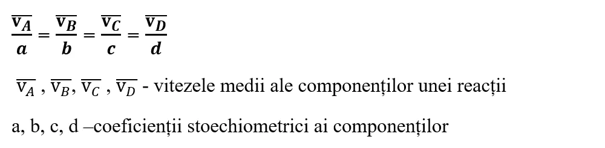

-
Considerând procesul protolitic, scris de la dreapta la stânga, se constată că ionul N H₄ se comporată că un acid, iar ionul hidroxid HO⁻ că o bază.

-
Amoniacul NH₃,este o bază care la dizolvarea în apă acceptă protonul de la molecula acesteia.
-
Ionul amoniu N H₄ este acidul conjugat al amoniacului, NH₃ (este o bază); ionul hidroxid HO⁻ este baza conjugată a apei, H₂O, care în acest proces are rol de acid.În consecință:
În concluzie
Un acid Brönsted are baza lui conjugată, iar baza Brönsted are acidul ei conjugat; dacă acidul este tare, baza conjugată este slabă și invers.
Acid↔Bază conjugată + H⁺
Bază + H⁺↔Acid conjugat
Caracterul acido-bazic al soluțiilor poate fi pus în evidență cu ajutorul indicatorilor.
Indicatorii acido-bazici sunt substanțe organice care își schimbă culoarea în funcție de caracterul acid sau bazic al soluțiilor.
Noțiuni de termochimie
Clasificarea reacțiilor chimice
Vezi lecție
Noțiuni de termochimie
Clasificarea reacțiilor chimice
Vezi lecție